Case study · Templates
NIQ webinar templates
Webinar visuals for NIQ's Digital Commerce division, redesigned as square posts that work with the social templates and up to four speakers.
- Client
- NIQ for Digital Commerce
- Year
- 2025
- Role
- Lead designer
- Tools
- Figma, PowerPoint
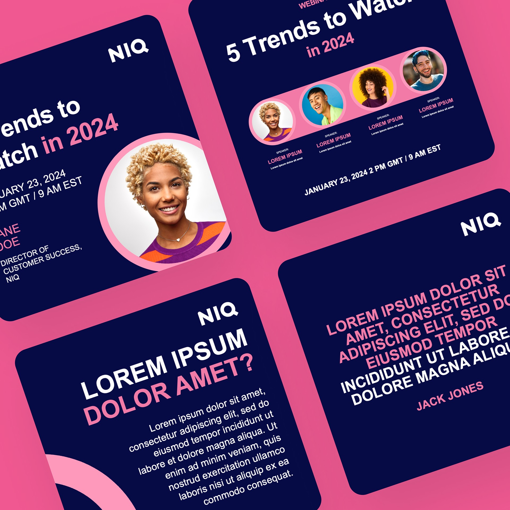
Overview
As NIQ Digital Commerce moved on from the legacy Data Impact brand and brought in the former FoxIntelligence, we needed a consistent look, especially for webinars.
I led the design of a webinar template for the whole Digital Commerce division, used for client presentations and thought-leadership sessions.
The goal
A flexible, easy-to-use template that:
- aligns with the new NIQ branding,
- works for different webinar formats, audiences and numbers of speakers,
- puts readability, clarity and professionalism first.
01
Where we started
The audit
When I arrived, webinars were promoted with wide, horizontal visuals: clunky, not built for mobile, and not very clickable.
Reviewing everything from pre-merger Data Impact visuals to early NIQ-branded pieces, I found the same problems again and again: crowded, low-contrast layouts, inconsistent fonts and colours, and no clear hierarchy to show people what mattered most.
02
The new system
Structure
I rebuilt the visuals as square 1200 × 1200 posts, so they slot straight in beside the social templates from the rebrand. The modular layouts each have one job (title, speakers, agenda, quote, key message), so content owners can just plug in their material. Speaker layouts flex for one to four people.
I also cut clutter, like a logo on every slide, to give the content room to breathe.
Hierarchy
Headlines sit in the same place every time, set large with plenty of white space. Subheads and footnotes step back through colour and weight, and key takeaways are picked out in NIQ's accent colours.
Anchoring elements carry across from one slide to the next, adding visual interest and nudging people to swipe through the carousel.
On brand
Type: NIQ's sans serif, Aktiv Grotesk, for a clean, modern look. This sets it apart from the parent brand, which also uses the serif Utopia.
Colour: NIQ's accent colours paired with its deep blue.
Layout: balanced and modern, with generous spacing for a tone of “quiet authority”.
03
In action
In use
The webinar slides work alongside the standard social templates, so teams could make new posts quickly. Here are three carousels promoting the same beauty webinar with L'Oréal, each from a different angle.
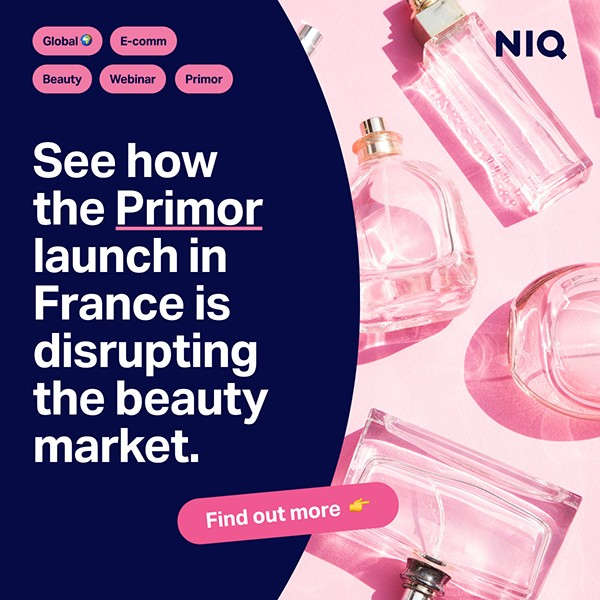
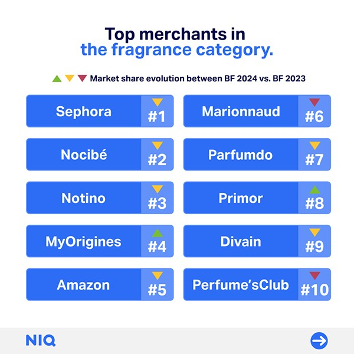
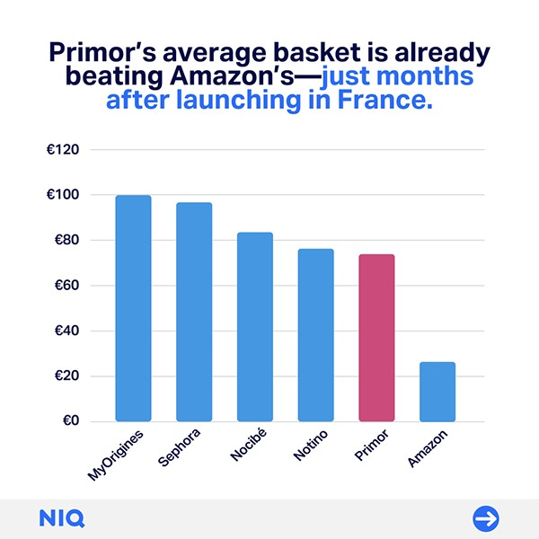
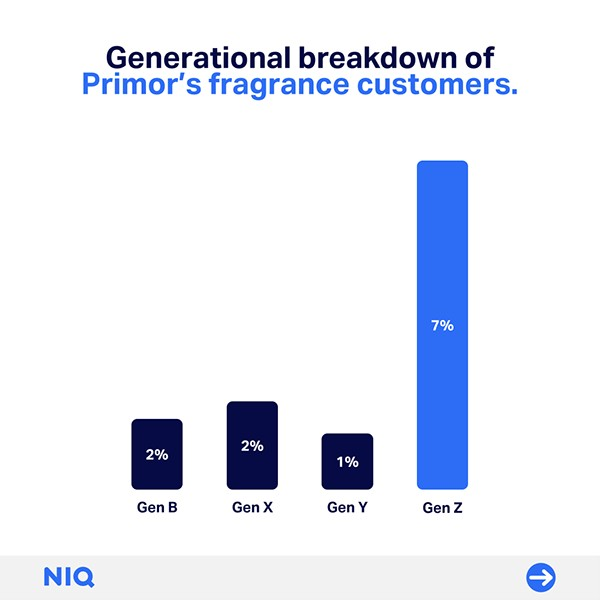
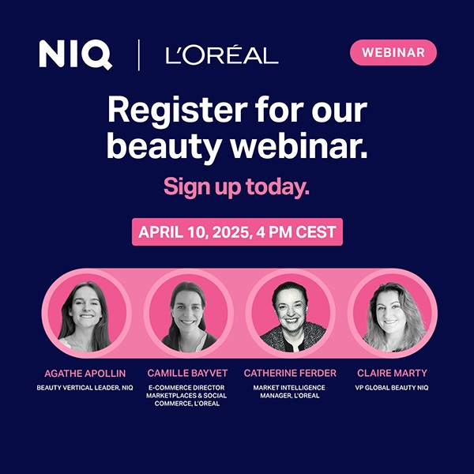
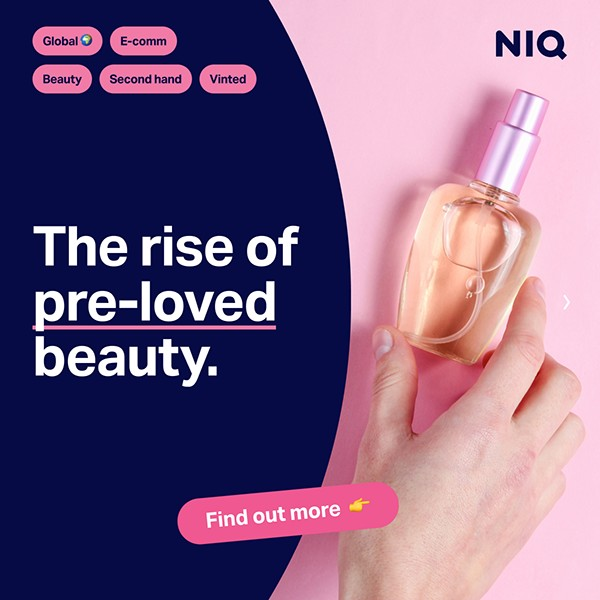
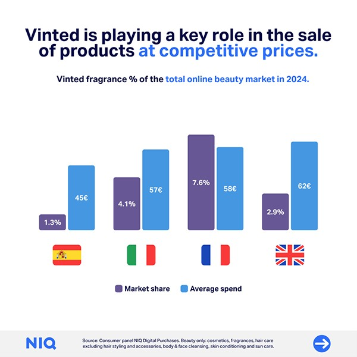
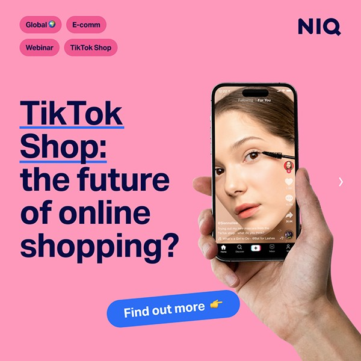
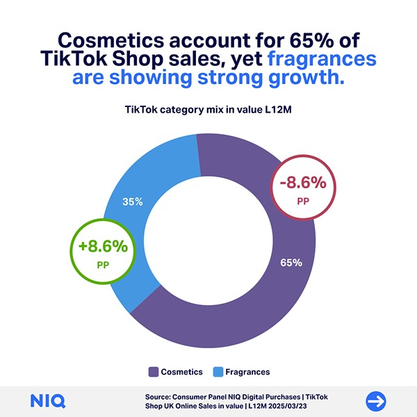
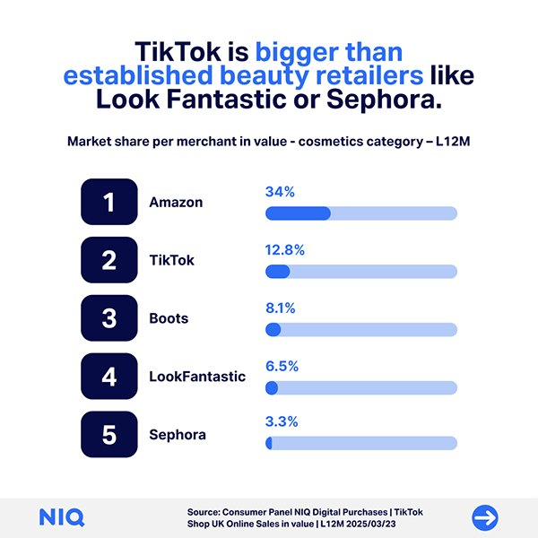
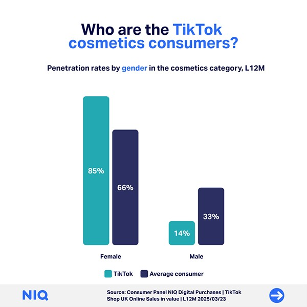
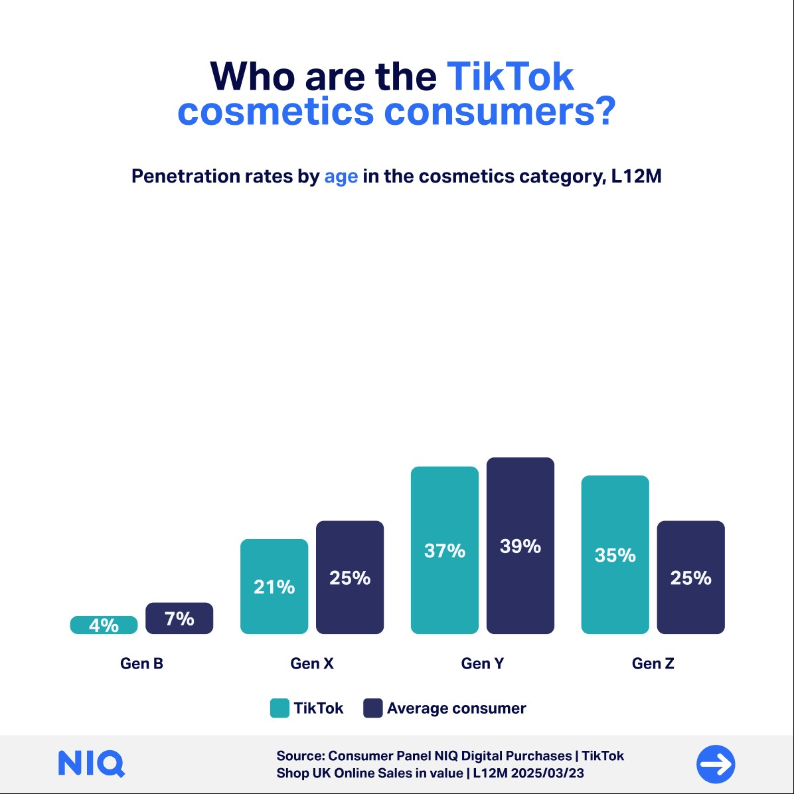
Beyond social
The template converts easily to other formats on request, like these promotional banners and headers for email.
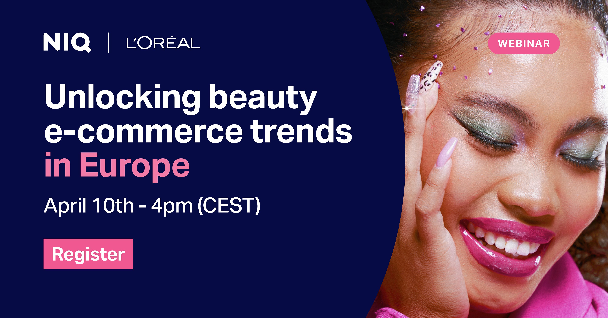
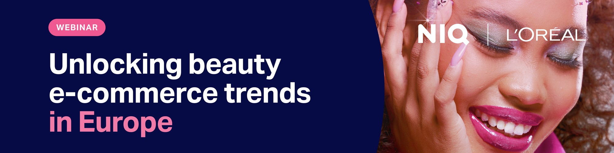
Outcome
I designed the system in Figma, and the final PowerPoint template held 45+ master slide layouts, so collaborators and stakeholders could create their own visuals quickly and easily.
Teams across NIQ adopted it fast. It made our external materials more consistent and saved a lot of time on webinar prep.